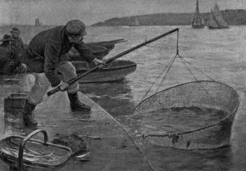

Float. Part 2
Description
This section is from the book "Sea Fishing", by John Bickerdyke. Also available from Amazon: Sea Fishing.
Float. Part 2
Imagine a man walking through a forest and suddenly coming upon a mutton chop daintily arranged on a silver plate ! I don't believe he would eat it. He would think it was poisoned, or something or other wrong about it. But if as he went on he came upon numbers of such carefully grilled, hot, and gravy-yielding mutton chops upon similar precious platters, I venture to say he would very soon taste one of them and make a hearty meal. Maybe that is the view fish take of the matter, or else how can we explain the great success which so often attends the use of ground bait, both in fresh water and salt ? In fresh water I am certain fish are brought on the feed, rather than merely collected, by the use of ground bait ; of this I have absolute proof. Over and over again have I cast my baited hook among fish which I could see, and not one would look at it till I had distributed handfuls of ground bait amongst them. Then, and not before, they came on the feed, and after a minute or two one would be caught.
There are many recipes for saltwater ground bait. That given is one of the best. As a matter of fact the angler will be well advised to take whatever he can get in the way of fish-offal, shell fish, lobster shells, oyster shells, small mussels and mussel shells. One of the most collecting ground baits he can use consists of the oily livers of fish, and particularly the entrails of pilchards. These latter, by the way, are excellent baits for many kinds of sea fish, though somewhat difficult to keep on the hook. There is more on this subject on PP- 131 - 136.
Now, leaving the rocks and the piers to the boys, let us take a stroll round the harbour and see what sport is there afforded. There are harbours and harbours. Some into which rivers flow are so fearfully polluted with chemicals from manufactories, gas works, and the like, that no fish will be found in them. From a fish's point of view ordinary town sewage is unobjectionable if kept within certain reasonable limits. The best harbours are usually those not too much polluted, and frequented by fishing boats, from which are cast all and sundry odds and ends of refuse attractive to fish.
Of course local information is very necessary. It is obviously no use fishing for bass in a harbour where none are ever found. The old sailor who haunts all harbours, if judiciously approached, will generally dole out items of information which will put us on the right track. Bass, small pollack, codlings, flat fish, smelts, grey mullet, may all be inquired after, but cautiously, for if too many questions are put your informant's mouth will close with a snap on the stem of a short clay pipe, and nothing more is to be learned from him that day. Your ancient mariner is a suspicious person, and above all things dislikes to be pumped.
Sometimes mackerel visit harbours. I remember, late one evening—or rather I should say early one morning, for it was about two o'clock—how, returning from conger fishing at Tenby, so shallow was the water, owing to the spring tide, that I had to anchor my boat some forty yards out and walk ashore. It was a dark night, but the waters were brilliant with phosphorescence, and I suddenly found myself wading through a large shoal of mackerel. The fish dispersed hurriedly. Little bars of incandescent silver leapt out of the water before, behind, and all around me, and as they fell again raised a shower of sparkling phosphorescent fires. It was a brilliant and very lovely sight. An evening or two later I was in the harbour at high water, and saw small mackerel swimming among the fishing boats which lay at anchor, for there was no wind. It was an easy matter to catch some of these fish with a small spinning bait; a Devon minnow I think I tried. This had only to be cast into the water and drawn a yard or two when half a dozen fish would rush at it.
At night-time large bass sometimes come right into the harbour among the fishing boats and are occasionally caught, but the bait must be such a one as they would expect in such a place. Something tasty, yet not over-nice. Skate's liver a little ' high' ; or the inward parts of chicken or rabbit, well hung. If the water is slack, there should be no lead on the line.
From the enthusiastic angler's point of view, one of the most important fish found in harbours is the grey mullet. I devote an article to this most shy of sea fishes later in Chapter XI., so this is hardly the place to detail his peculiarities and the methods of catching him or fishing for him. But let it be said here that the surest time to find him feeding is in the grey dusk of early dawn, and the tackle, which may be a paternoster or the ordinary float tackle, should be both fine and strong. Ground bait is most necessary.
A well-known bass fisher once related to me with tears in his voice how, when bass fishing, his hook being covered with skate's liver, a mullet which weighed at least 12 lbs. seized his bait, ran out every yard of line, and then broke the triple gut.
No one who has ever fished for mullet will assert that sea fishing does not require skill. I am inclined to say that a mullet of any size is no more easy or more difficult to catch than a carp of the same age. Of course the youngsters, foolish, ignorant, simple little things, like carp at the same period of their existence, come to the hook readily enough. But the adult mullet is certainly no fool. The lesser grey mullet is more easily captured than the larger variety.
Smelts are found in most harbours, and it is pretty work fishing for them with the lightest roach tackle and roach hooks baited with tiny fragments of uncooked shrimps or soft crab, the latter for preference. Whatever bait is used, a little ground-bait of the same kind chopped or minced up very small should be thrown in every few minutes. A dessertspoonful is enough at a time, for the object is not to feed the fish, but simply to keep them on the feed or look-out for food. The lightest and finest tackle is necessary for these small fish, and either a paternoster with four or five hooks can be used, or roach tackle with the same number of hooks. A porcupine quill float with a couple of shot to sink it is quite heavy enough. The hooks can hardly be too small ; in fact, few seaside tackle-makers sell them small enough or on sufficiently fine gut. The weight at the end of the paternoster should not exceed a quarter of an ounce. A toy bamboo rod, running line of fine plaited silk, two yards of fine-drawn gut, a dozen roach hooks, a quarter of an ounce of lead, and the smelt fisher has the necessary tackle.
SMELT FISHING FROM THE CUSTOM-HOUSE PIER AT COWES.
Continue to:
- prev: Float
- Table of Contents
- next: Float. Part 3
Tags
fishing, hooks, bait, fishermen, spanish mackerel, mackerel fishing